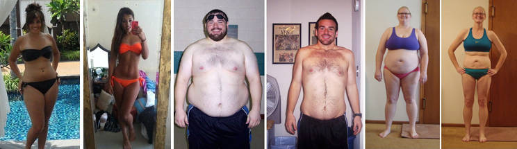
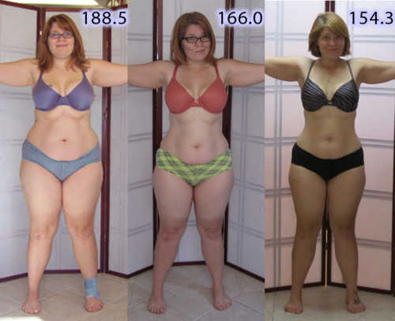
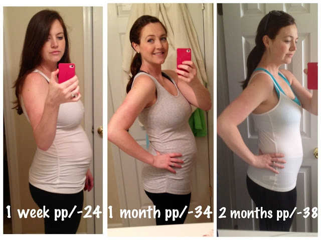

How Did Popstar Christina Aguilera Lose 3 Stones Off Her Stomach Fat Without Dieting or Exercise, in 2 Months Flat?
In a Recent Inteview, Christina
Reveals Her Amazing Fat Busting Secret That Melts Off Half a Stone of
Fat EVERY week without Diet or Exercise - and it works for both Men, and
Women!
When asked by Jay Leno about her remarkable weight
loss in a recent television interview, Christina Aguilera shocked the
audience. Whilst previously thought to be the result of extreme
exercise and a low calorie diet, Christina said her incredible
transformation was actually thanks to a strange common fruit.
On her blog she states, "I couldn't believe how easy it was. I didn't
change my diet or my daily routine but the fat melted off like butter and I lost all of my baby weight. Finally something that just works."
Christina Aguilera isn't the only celebrity jumping on this fat burning
wonder. Kelly Osbourne, Rachael Ray and Jennifer Lopez are all reported
to have lost a significant amount of body fat using the same diet. The
combined use of both these new products is the hottest thing right now,
and not without reason either. This clinically proven formula can melt
8lbs of fat off every 7 days plus flush out all the junk from your body.
And even better, the product is totally affordable! We know what
you're thinking though.. and we also had our doubts.
But with Christina and many celebrities experiencing success with the Ultra Ketone System
we knew we had give it a shot and try to experience first-hand the same
success these stars have received. After a quick office survey we chose
our chief editor Helen Crisell who was trying to drop weight fast for
her upcoming wedding in 7 weeks. Here is her account of using both
products for 4 weeks.
Christina Aguilera claims the Ultra Ketone System and Cleanse Xtrem combo were key factors in losing 3 stones in just 6 weeks.

"Ultra Ketone System, the main ingredient inside the Ultra Ketone System,
is one of the most effective weight-management substances on the market
right now. It comes from natural phenolic enzymes in berries and will
hasten your weight-loss efforts when used in short intervals (less than 3
months). The natural extract is called hydroxycitric acid (HCA), and
researchers claim that HCA can double or triple one's weight loss."Helen explains, "I first heard of the extremely popular Ultra Ketone System
in the news and on the Dr. Oz Show. It contains a substance most of us
know as Ultra Ketone System, a completely organic ingredient native to
berries and scientifically proven to tear away fat from your body when
taken daily. The problem, however, is that it's impossible to ingest
enough physical berries for the Ketone ingredient to affect your
metabolism to a point of visible weight-loss as there are only minute
amounts physically. In studies from UCLA's health research department, Ultra Ketone System
usage showed a statistically significant prevention of
high-fat-diet-induced elevation in body weight through alteration of
lipid metabolism, increasing norepinephrine-induced lipolysis and fatty
acid oxidation. Furthurmore a direct correlation (with R-squared =
0.988) was shown linking the Ketone ingredient to a speed up in lipid
metabolism of 270%, almost trippling a regular individual's fat burning
capacity."
With that said, there are very few Ultra Ketone System products on the market that are pure. Most fluctuate between the 60-70% purity levels and contain loads of fillers. Ultra Ketone System on the other hand is a true Ketone product containing 95% pure Ultra Ketone System.
According to Dr. Chan (The guest host on the popular Dr. Oz show) the Ultra Ketone System works in multiple pathways to kick start your body's lipid metabolism.
"The first pathway is the ketone binds
to the adrenergic receptors causing a speed up in your body's lipid
metabolism. This pathway will increase the burning of glucose, sugar,
and fat in the body right away. The second pathway, which is also the
most important pathway, slows the release of sugar into the blood
stream, and without excess sugar building up in the blood stream, you
essentially stop fat production because there is no sugar to turn to
fat. When the two pathways are combined together, you get this
synergistic effect that basically burns, blocks, and stops fat, but it
is also 100% natural and safe." -Dr. Chan
With the science behind I still wanted more evidence, and after interviewing multiple individuals using the Ultra Ketone System, I found that those experiencing shocking weight loss were also using the natural detoxifier Cleanse Xtrem.
Together, testimonials claim the combined usage of both these products
led to significant weight-loss, more energy and generally a healthier
day-to-day feeling. If you're skeptical, you're not alone. When I first
learned about this weight-loss combo, my diet fad radar went off right
away.
Nevertheless, as I began to investigate the countless success stories
reported by people from all around the globe, my view started to shift
more towards reality. And the really interesting bit is that most of
these people had not significantly changed their current lifestyles.

Jessica Green, from California reportedly lost over 2 stones in about 5 weeks while being on the Ultra Ketone System
! She wrote on her blog, "I couldn't believe how easy it was. I didn't
change my diet or my daily routine, but the fat just came off like that.
I love this stuff!
So to prepare myself for the experiment, I placed an order for the Ultra Ketone System and Cleanse Xtrem
combo online. One thing to note here is that there are many off-brands,
so make sure you get the correct product that has the full name "Ultra Ketone System".
This is important because this specific product has been clinically
tested and approved at the GNP Labs in Los Angeles, California whereas
other brands may not have been.
After waiting a few days, my bottle of Ultra Ketone System
finally came via Royal Mail. I didn't know what it was initially since
it was in an unmarked package, but I'm glad they thought of my privacy
first! After taking the product out of the box and reading the labels, I
could tell that this was a quality ketone product.
Benefits of Ultra Ketone System:
- 4 Times More Weight Loss Than Diet and Exercise
- Boosts Energy
- Rich in Antioxidants
- Promotes Cardiovascular and Digestive Wellness.
Along with the Ultra Ketone System, I received the bottle of Cleanse Xtrem in the same box. The idea behind combining the products is that while Ultra Ketone System encourages weight loss and increases energy, Cleanse Xtrem helps rid your body of toxins and allows your body to work and burn calories more efficiently.
Benefits of Cleanse Xtrem:
- Helps Eliminate Bad Toxins That Have Built Up Over the Years
- Destroy harmful parasites in your digestive tract
- Removes 'Sludge' From the Walls of the Stomach
- Helps Get Rid of Gas and Bloating
These were My Results - 1 stone 5 lbs of Weight Loss in Just 1 Month

After one week on the diet using both
products I was surprised at the dramatic results. My energy level was
up, and I wasn't even hungry. A welcomed side effect of the Ultra Ketone System and Cleanse Xtrem diet is it's power to curb the appetite.
I honestly felt fantastic!
Best of all, I didn't even change anything about my daily routine. On
Day 7, I got on the scale and couldn't believe my eyes. I had lost almost half a stone.
But I still wasn't convinced, since they say you lose a lot of water
weight at the beginning of any diet. I wanted to wait and see the
results in the upcoming weeks. But it sure was looking up! I now weighed
under 10 Stone for the first time in years!
After two weeks of using both
supplements, I started the week off with even more energy, and actually
sleeping more soundly than before. I was no longer waking up during the
night and tossing and turning because my body was actually able to relax
(this is a result of getting rid of the toxins, I think). Plus I still
managed to lose almost one full stone, putting me at an unbelievable 1
stone 5 lbs less, in just 2 weeks.
I must admit that I'm starting to believe that this diet is more than just a gimmick.
After 3 weeks, all my doubts and
skepticism had absolutely vanished! I am down, 2 full dress sizes after
losing another half stone. And I still have a ton of energy. Quite
often, around the third week of other diets, you tend to run out of
steam. But with the Ultra Ketone System and Cleanse Xtrem
combo, my energy levels don't dip, instead they remain steady
throughout the day. I no longer need that cat nap around 3pm in the
afternoon! I am even noticing that my stomach is digesting food so much
better. No bloating or embarrassing gas after I eat.
After the fourth week, my final results were shocking. I lost an unbelievable 1 stone 5 lbs since starting the Ultra Ketone System and Cleanse Xtrem combo! Actually everyone at UK Weekly is kicking themselves for not having volunteered to be the guinea pig. Using Ultra Ketone System and Cleanse Xtrem
in week 4, I lost an additional 2.2 lbs. The results are consistent!
But to be honest, I really didn't have much more than that left to lose.
I am definitely going to continue taking Cleanse Xtrem afterwards because it has so many antioxidants and vitamins that makes my skin look unbelievable.
I couldn't be any happier with the results. I Lost 1 stone 5 lbs in 4 Weeks, No Special Diet, No Intense Exercise.
The bottom line is this product is working for a
lot of people right now. And if you are still a little doubtful about
the effects of this fat burning combo, there's an exclusive promotion
running for a limited time so you can try it risk-free. The creators are
so confident that you will fall in love and be back for more that they
are offering a small trial of Ultra Ketone System and Cleanse Xtrem
-- you pay only the shipping. So what are you waiting for? Take action
now and give your body a trim. We look forward to hearing about your
success so make sure you keep a log with before and after photos and
please write back to us!
IMPORTANT: * We have tested both products
together, so It is important that you use Step 1 and Step 2 in this
method to achieve similar results.
STEP 1 : OFFER FOR OUR READERS ONLY!
STEP 2 : OFFER FOR OUR READERS ONLY!
Posted by DIANEMy friends and I have all been waiting for the
Ultra Ketone System diet to hit the news. At least 5 of us have all done the
Ultra Ketone System
combo diet and we all lost a bunch of weight. This stuff truly is
incredible and has changed all of our lives. Good luck to everyone who
takes advantage of this wonderful opportunity.
Posted by MICHELLE
Helen,
i saw the product on oprah and rachael rays show. however, i didn't
know how to order it and came across your site where you found bonus
trial supplies which is great because i dont want to pay for something i
didnt know worked. i'm currently on my 2nd month on this stuff and i
have to say.. this stuff works and my results are unbelievable thank
you so much for putting up this article and doing the test.
Posted by CARA
I
have been procrastinating for 2 months now on losing weight and today
is the day I am gonna take action and get started. I've gone ahead and
ordered the trials and going to go do 30 minutes of exercising right
now! Thanks InShape Daily for the motivation for get me started! Love,
Cara
Posted by MICHAELHey, Helen, I saw the report on TV and realized the
Ultra Ketone System
WORK EVEN BETTER FOR MEN who want to lose weight!!! I am definitely
going to try the trial offers before they expire! Thanks for sharing
the tips and you should mention how great this diet is for us men too,
don't forget it next time. LOL!
Posted by DOROTHEE
My
daughter has had weight issues since she was a baby and the doctor says
we really need to get her on a diet so she can lose 8 Stone. I really
hope this is the answer. Thank you InShape Daily.
Posted by RHIA
My
husband and I both need to lose weight because we are going to be
seeing family we haven't seen in 25 years. Already ordered it and we
are both going to try this out, thanks. - The Higgins family
Posted by STEPHENI've been seeing
Ultra Ketone System
diets all over. I even heard my mom talking about this diet a few days
ago since one of her friends has lost like 8 lbs in the first 15 days! I
definately have to try this, thanks. P.S. – for all male readers out
there, I found out that this diet works for anyone. so give it a try!
Yes it even works for your pet! It's that healthy!
Posted by NANCY
This
stuff is amazing! My best friend Jessica did the same diet and lost an
incredible amount of weight. i couldn't believe it and had to do some
research on my own which is how I found this news article. I can't
believe they are offering bonus trials! I know Jessica spent something
like $600 and was thrilled.. imagine how excited she would be if it
cost her under $10.00. This is a godsend, thanks so much!!
Posted by AMYI was a bit skeptical when I first read about this but as I researched more and more I found out that
Ultra Ketone System
is indeed what Rachael Ray and many scientists say it is. It's one of
the secret anti-aging products that nobody seems to want to share. I
wouldn't be surprised many celebrities know about this. I requested for
the
Ultra Ketone System 1 month supply and I'm so excited! I cannot wait for them get here!
Posted by WANDAA friend of mine did the
Ultra Ketone System
diet and recommended it to me 3 weeks ago. I ordered the products and
received them within 3 days (although I didnt get the discounted
shipping). The results have been incredible and I can't wait to see what
weeks 3 and 4 bring.
Posted by NICOLEThis is an absolutely amazing breakthrough. I can't thank the guys at
Ultra Ketone System enough! 24 lbs in a month!
Posted by SAM
I
stand by this diet. I tried this diet a months ago and I can't say
enough about it. This diet helped me lose 28.5 lbs and it completely
changed my life. I highly recommend this diet to ANYONE that's looking
to shred unnecessary fat.
© Copyright . All Rights reserved.

Add Comment
Leave your commentPlease remember to keep comments respectful. Abusive comments will not be tolerated, and will result in the removal of the comment as well as a permanent ban to the user who posted it.
*Only registered users can comment. LOGIN